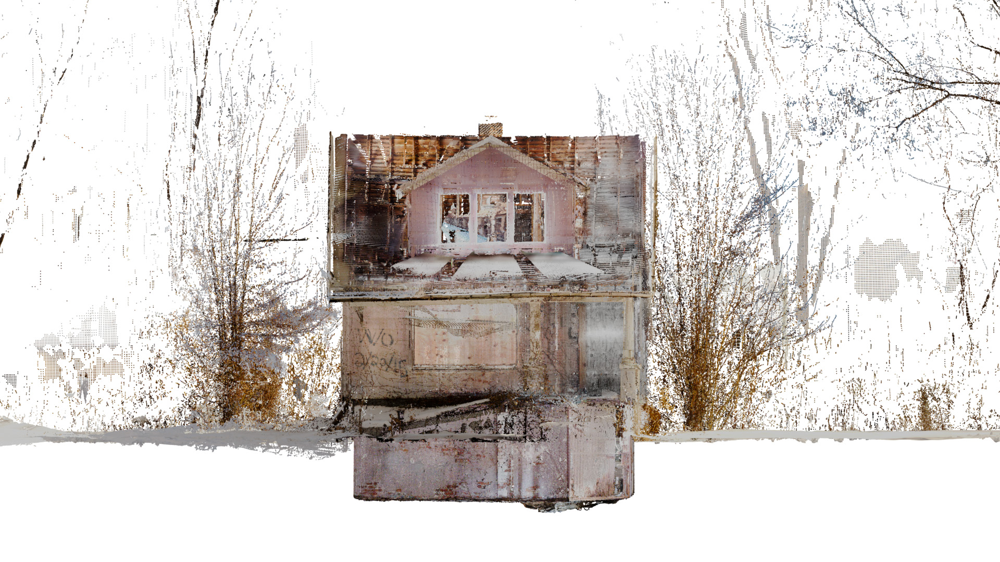
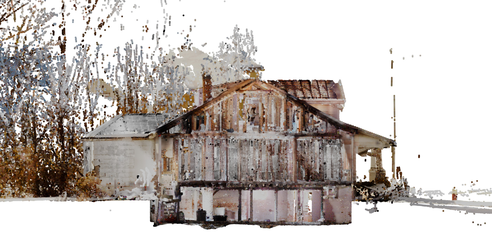
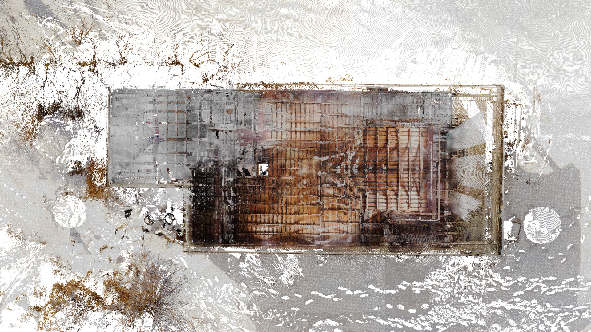
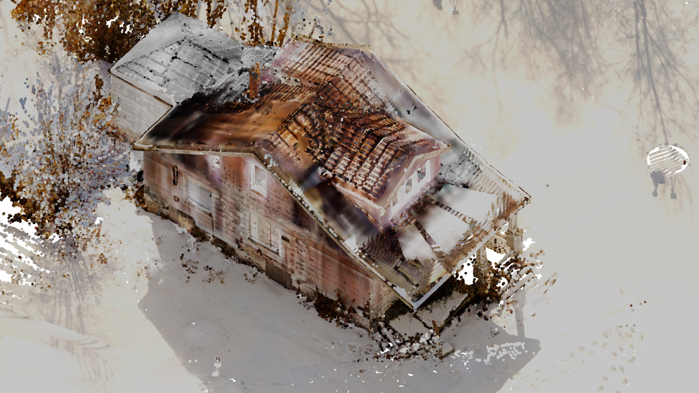

❮
 ❯
❯

EIPC conducted a 3D scan of a house on Whithorn St. in Detroit to support the work of Taubman College fellow Tess Clancy. The house, now abandoned, once belonged to Clancy’s grandfather and serves as a focal point for her research into memory, family history, and urban transformation. The scan captured the home’s current condition, providing a spatial and material record that could be used for archival, analytical, or creative purposes. This project reflects how digital documentation can support deeply personal inquiries into place, loss, and legacy within the shifting landscape of Detroit.